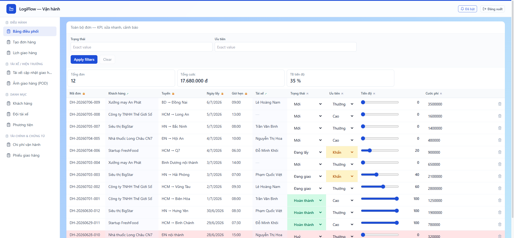
5.1Builder & cấu trúc ứng dụng
Là gì: trình dựng dạng canvas — danh sách màn hình gom theo nhóm/Workspace, dataset gắn kết, và khung xem trước trực tiếp (Live preview) ngay bên phải. Một mini-app gồm nhiều màn thuộc 4 loại: Form / Table / Document / Dashboard.
⚙ Cách làm
- Vào Workboards → New workboard (chọn Dataset nguồn).
- Trong Builder, thêm màn hình bằng palette + Form / + Table / + Document / + Dashboard; gom màn thành nhóm (vd “Điều hành”, “Tài xế”, “Danh mục”) — nhóm chính là mục điều hướng bên trái.
- Kéo để sắp xếp; bấm một màn để mở trình sửa chi tiết (3 tab: Content · Permissions · Settings).
- Dùng Live preview để xem app thật ngay khi sửa — có thể giả lập vai trò (Quản lý/Điều phối/Tài xế) và đổi thiết bị (điện thoại/tablet/desktop) để kiểm tra RLS & bố cục.
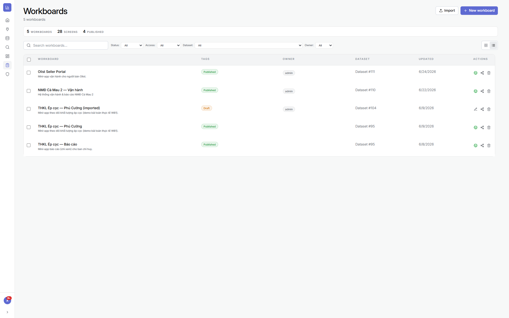
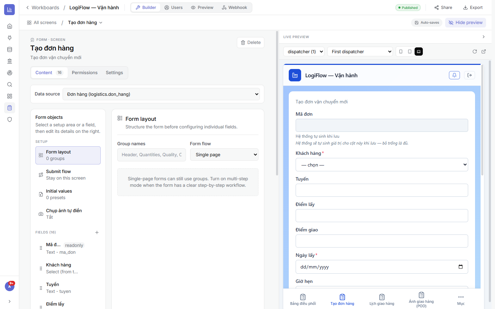
5.2Giao diện & Cài đặt — Design system tuỳ biến MỚI
Là gì: tuỳ biến toàn bộ diện mạo mini-app trong một chỗ (nút App settings) — không chỉ tên/màu/logo như trước, mà cả chế độ Sáng/Tối, ảnh/nền gradient, phông chữ, kiểu thẻ & header, và giao diện riêng cho trang đăng nhập. Mọi thứ áp dụng ngay cho cả app-shell lẫn cổng đăng nhập, tự đồng bộ desktop & mobile.
Các nhóm thiết lập:
- Thương hiệu: Tên app, Logo URL, Lời chào (login), Tagline login.
- Màu & chế độ: Màu chính + Màu nhấn (accent) chọn bằng bảng màu (không cần gõ hex); Chế độ = Sáng / Tối / Tự động; Phông chữ (System / Inter / Be Vietnam Pro / Roboto / Serif / Mono).
- Nền app: Màu đơn, Gradient (preset dựng sẵn, có xem trước), hoặc Ảnh nền (tải lên — ảnh được nén & nhúng an toàn; không phụ thuộc link ngoài).
- Thẻ & header: Bo góc thẻ, Đổ bóng, Kiểu header (Viền dưới / Nền màu / Tối giản).
- Nền trang login riêng + Auto-number (mẫu
DH-{YYYY}{MM}{DD}-{N:3}+ chu kỳ reset) + Điều hướng (sidebar/top-tabs · bottom-nav/drawer).
⚙ Cách làm
- Trong Builder, bấm App settings.
- Nhóm Màu & chế độ: bấm ô màu mở bảng chọn màu; chọn Chế độ = Tối nếu muốn dark-mode; chọn Phông chữ.
- Nhóm Nền app: chọn Gradient rồi chọn preset (xem thanh preview), hoặc Ảnh nền để tải ảnh.
- Chỉnh Bo góc / Đổ bóng / Kiểu header, đặt Tagline login. Mọi thay đổi hiện ngay ở Live preview.
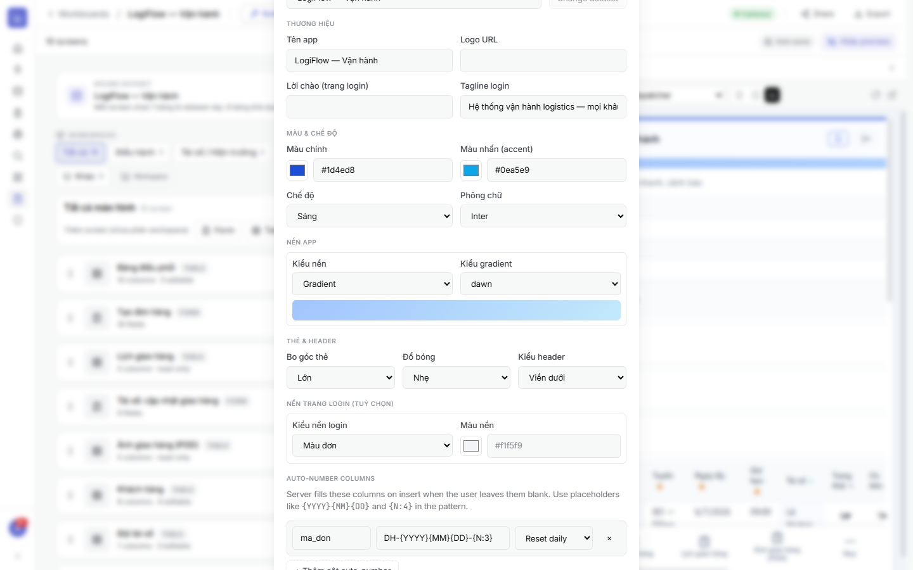
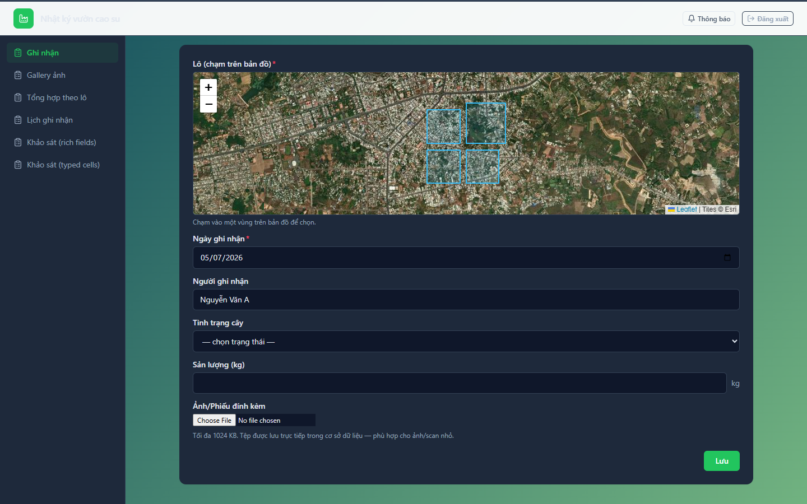
5.3Màn hình Form (nhập liệu) — 30+ loại trường MỚI
Là gì: biểu mẫu một hoặc nhiều trang (wizard có thanh tiến độ), chia section, kho hơn 30 loại widget (từ text/số cơ bản đến sao đánh giá, thanh trượt, tiền tệ, chữ ký, quét mã, GPS, bản đồ, video…), logic điều kiện (show_if / required_if / readonly_if / valid_if) có thư viện hàm, giá trị mặc định, và OCR chụp ảnh tự điền.
Kho widget đầy đủ (chọn ở ô Widget khi thêm trường):
- Cơ bản:
text·textarea·number(có đơn vị) ·select·lookup(chọn từ bảng khác, đa hop) ·date·datetime·checkbox - Văn bản có kiểu MỚI:
email·phone·url(validate + bàn phím phù hợp + bấm gọi/mở link) ·rich_text(soạn Markdown: đậm/nghiêng/danh sách/link + xem trước) - Chọn & đánh giá MỚI:
enum_list(chọn nhiều — chip, giới hạn số) ·rating(sao) ·slider(thanh trượt min/max/bước + đơn vị) - Số & thời gian MỚI:
currency(tiền tệ + ký hiệu) ·percent(%) ·time(giờ) ·duration(khoảng thời gian giờ/phút) ·color(bảng chọn màu) - Hiện trường / media:
image·images(nhiều ảnh, giới hạn, ép chụp) ·file·signature(chữ ký tay) ·barcode(quét QR/mã vạch) ·audio(ghi âm) ·video(clip ngắn) ·geopoint(bắt GPS) ·map(chọn vùng/lô trên bản đồ vệ tinh) - Nghiệp vụ:
computed(tự tính theo công thức, lưu khi submit) ·status(trạng thái/duyệt có màu, giới hạn vai trò đổi)
⚙ Cách làm
- Mở màn Form, ở tab Content chọn Data source (bảng đích).
- Bấm + Add field, đặt Label, chọn Widget, gắn cột. Widget giàu cấu hình (rating/slider/currency/enum_list…) hiện thêm ô riêng ở mục “Cấu hình widget” (số sao, min/max/bước, ký hiệu tiền, số lựa chọn tối đa…).
- Tuỳ chọn điều kiện: show_if / required_if / readonly_if / valid_if.
- Bật Multi-step (Form flow) để chia wizard; đặt giá trị mặc định nếu cần.
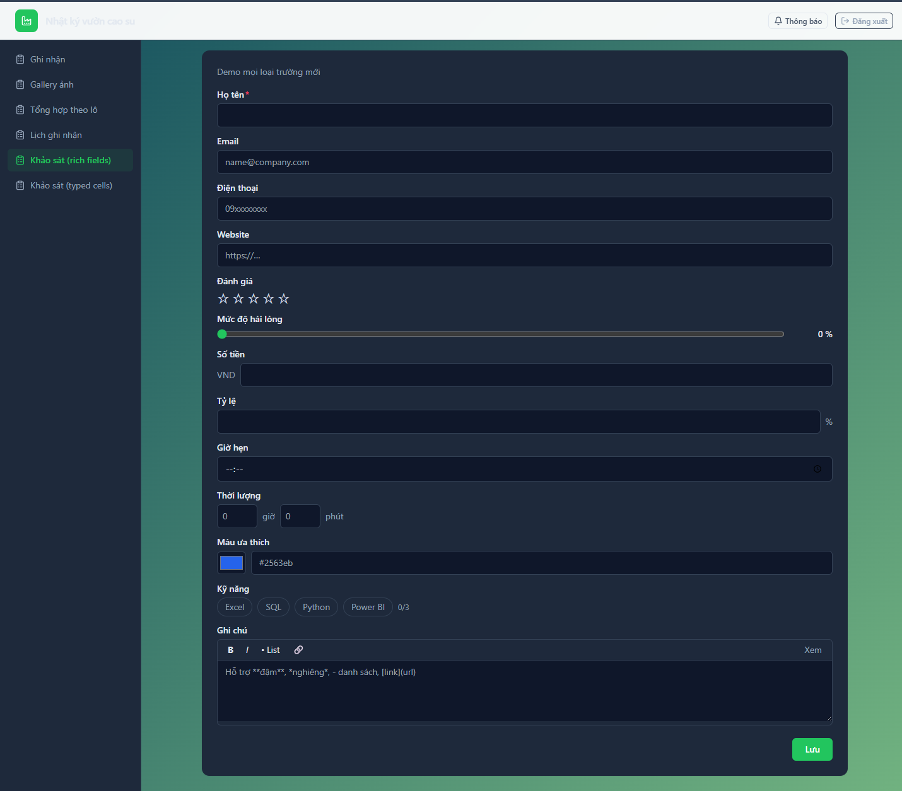
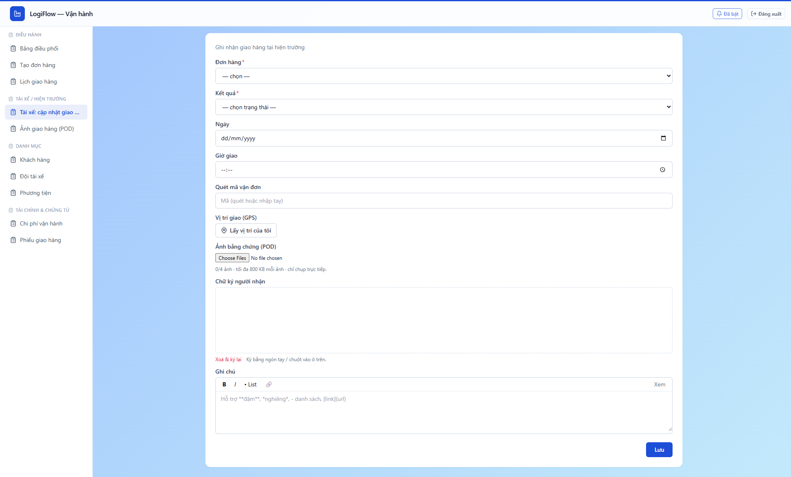
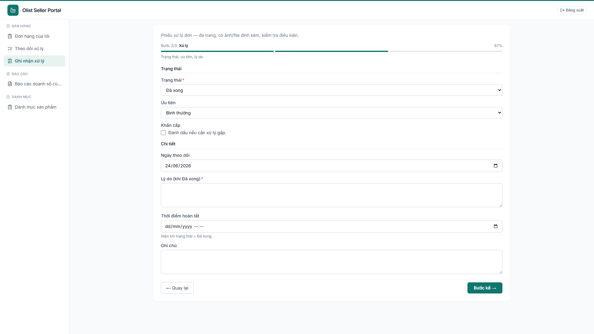
AND/OR/NOT, hỗ trợ CONCAT · UPPER · LOWER · TRIM · LEN · LEFT · RIGHT · CONTAINS · ISBLANK · MOD · POWER · YEAR · MONTH · DAY. Tham chiếu trường khác bằng [ten_cot] hoặc {{row.ten_cot}}. Ví dụ: valid_if = [ngay_giao] >= [ngay_lay]; required_if = [kenh] == "Điện thoại".Widget Bản đồ (chọn vùng/lô trên bản đồ)
Form có widget Bản đồ: hiển thị các vùng/lô (polygon) trên bản đồ vệ tinh, người nhập chạm vào một vùng để chọn. Hình học lấy từ một bảng dataset; giá trị chọn lưu như một lựa chọn bình thường. Rất hợp cho mini-app hiện trường.
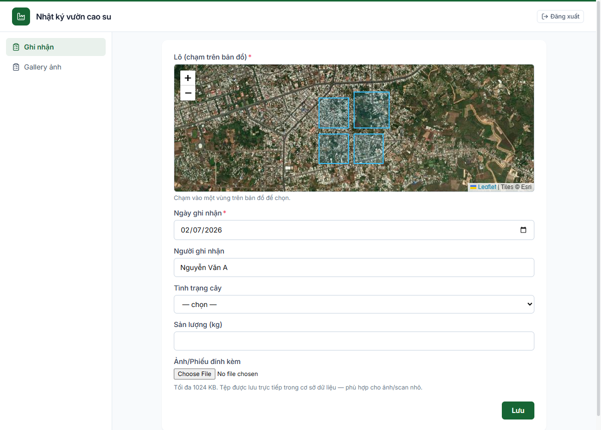
AIChụp ảnh → AI tự đọc & điền form (OCR) ĐIỂM MẠNH MỚI
Là gì: người nhập chụp (hoặc tải lên) ảnh một tờ phiếu — đơn hàng, hoá đơn, biên bản, phiếu giao… — AI đọc nội dung và tự điền vào đúng các trường của biểu mẫu. Người dùng chỉ việc rà soát rồi lưu. Cắt phần lớn thời gian gõ tay và giảm sai sót, đặc biệt cho nhân viên hiện trường.
Cách hoạt động (chính xác theo hệ thống):
- Mang token của bạn (BYOK): hỗ trợ 3 nhà cung cấp AI thị giác — Anthropic (Claude), OpenAI (GPT), Google Gemini — tự chọn model (mặc định lần lượt
claude-3-5-sonnet/gpt-4o-mini/gemini-2.5-flash). - Hiểu đúng biểu mẫu: hệ thống tự gửi cho AI danh sách trường của chính form (mã cột, nhãn, kiểu, và các lựa chọn nếu là select) → AI trả về giá trị theo từng cột.
- Tự chuẩn hoá theo kiểu trường: số (hiểu cả định dạng
1.234,56), ngày (đưa về chuẩn), trường chọn (khớp về đúng đáp án), checkbox. - Không bịa: trường nào không thấy rõ trong ảnh thì bỏ qua, không điền bừa.
- Dễ rà soát: các ô được AI điền được tô vàng + gắn nhãn “AI” để người dùng kiểm tra trước khi lưu.
Cách bật (builder):
⚙ Cấu hình
- Mở màn Form → mục “Chụp ảnh tự điền (OCR)”, tích “Cho phép chụp ảnh để tự điền biểu mẫu”.
- Chọn Nhà cung cấp AI + Model, dán Token (API key).
- Bấm “Kiểm tra kết nối” để chắc token/model hoạt động trước khi dùng.
- (Tuỳ chọn) thêm “Hướng dẫn cho AI” mô tả bố cục phiếu để đọc chính xác hơn.
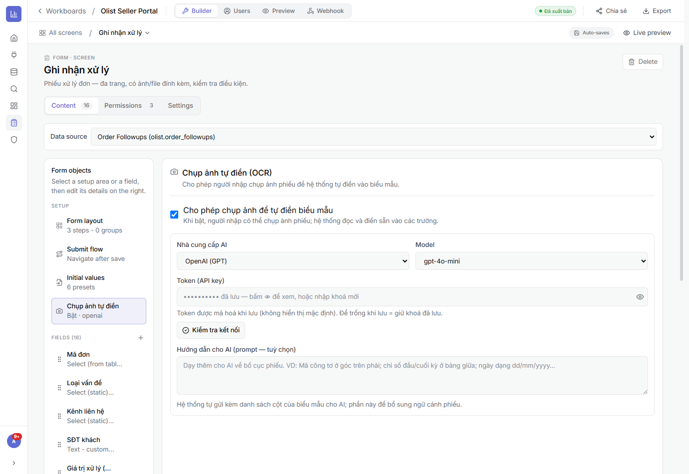
Cách dùng (người nhập):
⚙ Thao tác
- Ở màn Form, bấm 📷 “Chụp ảnh để điền nhanh” hoặc kéo-thả ảnh (trên điện thoại mở thẳng camera/thư viện).
- Đợi AI đọc — các trường khớp được tự điền & tô vàng.
- Kiểm tra/sửa rồi bấm Lưu.
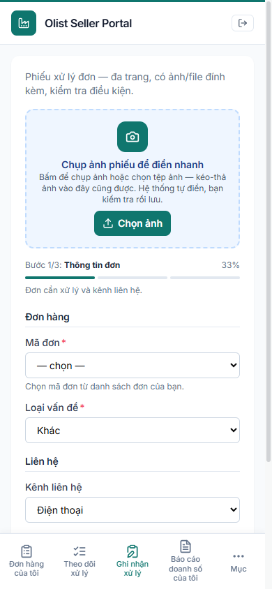
5.4Màn hình Table — bảng, ô sửa đúng kiểu, KPI, tổng hợp MỚI
Là gì: màn dữ liệu mạnh nhất. Ngoài bảng cơ bản (cột hiển thị/sửa, lọc, thêm/xoá dòng, dán hàng loạt), giờ có: 3 chế độ hiển thị (Bảng / Gallery / Lịch), ô sửa đúng kiểu (typed cells), thẻ KPI đầu bảng, cột tổng hợp từ bảng con (roll-up), tô màu có điều kiện, cột lookup (VLOOKUP đa hop), cột tính toán JS, dòng tổng, nhóm cột, và panel chi tiết khi bấm dòng.
⚙ Cách làm (cơ bản)
- Mở màn Table, chọn Data source (bảng).
- Visible columns = cột hiển thị; Editable columns = cột cho phép sửa inline.
- Bật Add/Delete row, cấu hình Filters (text/select/ngày/số), Footer totals.
- Chọn Chế độ hiển thị = Bảng / Gallery / Lịch ở cuối cột trái của trình sửa.
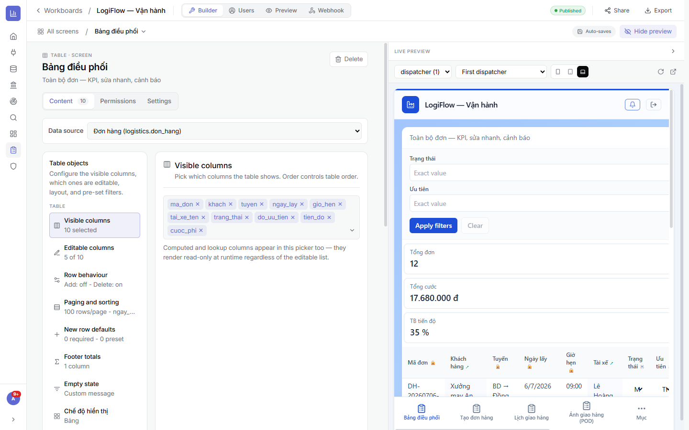
a) Ô sửa đúng kiểu (typed cells) MỚI
Trước đây mọi ô sửa inline đều là text trơn. Nay mỗi cột sửa được có thể chọn loại ô đúng nghĩa: số, tiền tệ, %, ngày, giờ, checkbox, select, chọn nhiều, sao (rating), màu, thanh trượt — cả ở lưới lẫn panel chi tiết. Đặt trong Column presentation → Kiểu ô nhập của từng cột (chỉ hiện với cột nằm trong Editable columns).
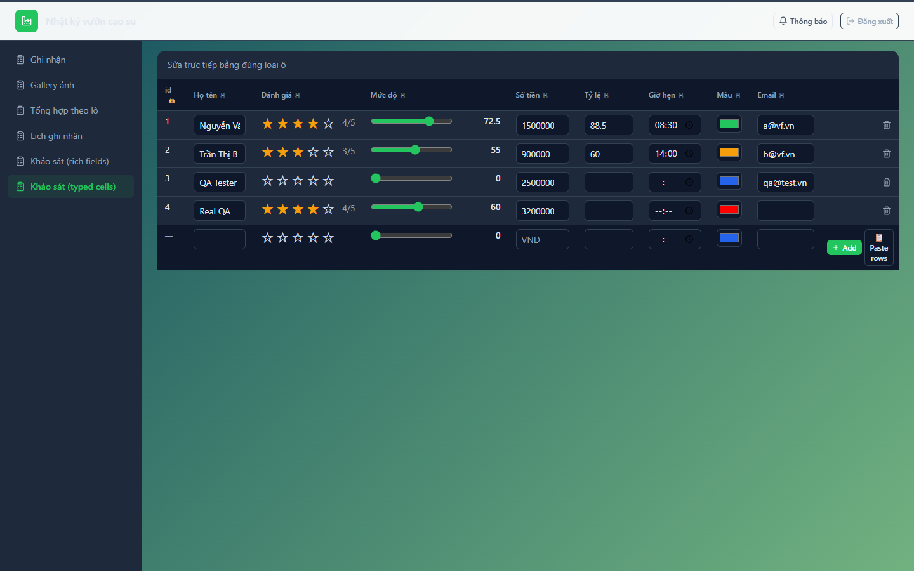
b) Thẻ KPI · Roll-up · Tô màu có điều kiện MỚI
- Thẻ KPI (stat tiles): dải thẻ số đầu bảng, tự tổng hợp trên dữ liệu đang xem (đếm/tổng/TB/min/max) — vd “Tổng đơn”, “Tổng cước”, “TB tiến độ”.
- Cột Roll-up: gom & tính từ bảng con lên từng dòng cha. Vd trên bảng Khách hàng: “Số đơn” = đếm đơn, “Tổng cước” = tổng cước của khách đó.
- Tô màu có điều kiện (format rules): tô nền dòng/ô khi biểu thức đúng (cùng cú pháp điều kiện của Form), có icon & nhãn. Vd đơn “Khẩn” → vàng, “Hoàn thành” → xanh, “Huỷ” → đỏ.
- Cột Lookup (kéo giá trị từ bảng liên quan, VLOOKUP đa hop) & cột tính toán JS (công thức JavaScript chạy sandbox, tính mỗi dòng — kiểm thử bằng test-js).
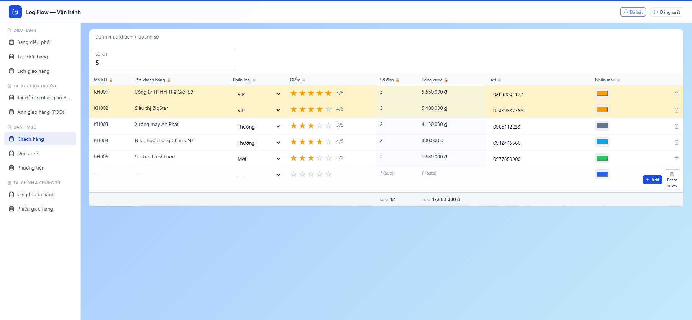
c) Chế độ Gallery — thẻ ảnh
Chế độ Gallery: mỗi bản ghi hiện thành thẻ ảnh (ảnh + tiêu đề + phụ đề), gom nhóm theo một cột (vd theo ngày/lô), có bộ lọc. Hợp để xem nhanh ảnh chứng từ/POD sau khi nhập bằng Form.
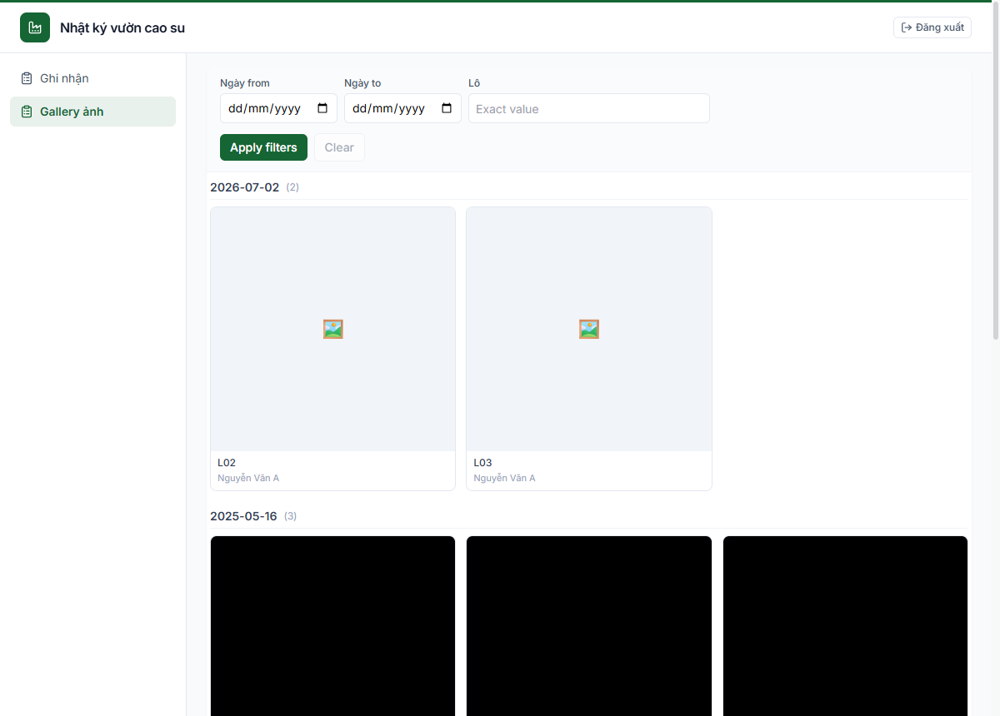
d) Chế độ Lịch (Calendar) MỚI
Chế độ Lịch: đặt bản ghi lên lưới tháng theo một cột ngày, chip tô màu theo trạng thái (có chú thích), điều hướng tháng & nút “Hôm nay”. Cùng dữ liệu/RLS/bộ lọc/panel chi tiết như bảng.
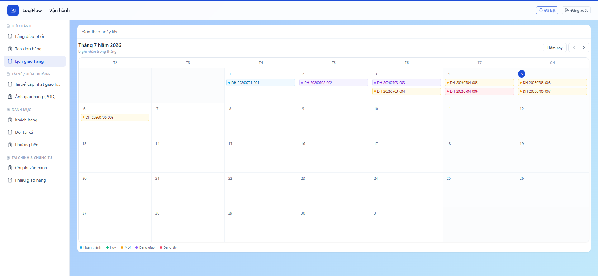
5.5Màn hình Document (in ấn A4)
Là gì: tài liệu khổ A4 in được, ghép từ các block: header, key-value, text, data table (có dòng tổng), footer, chữ ký; hỗ trợ biến động ({{today}}, {{app_user.username}}…).
⚙ Cách làm
- Mở màn Document, đặt Page setup (khổ giấy, hướng, lề).
- Bấm + Add block để thêm header/text/data table/kv/footer/chữ ký.
- Với data table, chọn bảng & cột hiển thị, bật dòng tổng nếu cần.
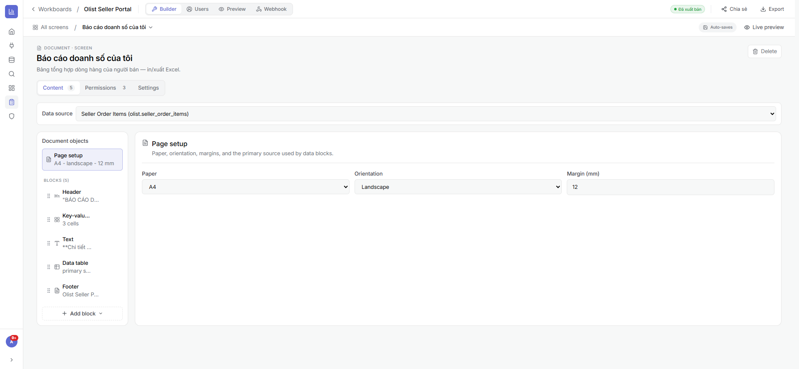
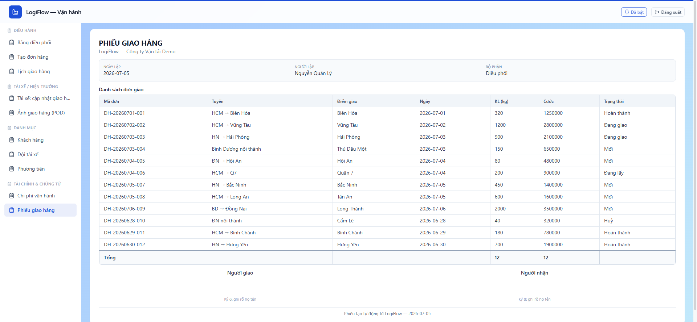
{{today}}/{{app_user.full_name}}, bảng dữ liệu + dòng tổng, ô chữ ký, footer.5.6Màn hình Dashboard (nhúng báo cáo)
Là gì: nhúng thẳng một báo cáo AppBI vào mini-app, ánh xạ bộ lọc theo vai trò người dùng, và tự sinh link công khai riêng cho từng vai trò.
⚙ Cách làm
- Mở màn Dashboard, chọn báo cáo nguồn.
- Thêm Role mapping để mỗi vai trò chỉ thấy phần dữ liệu của mình; hoặc Static filters để cố định một giá trị.
- Hệ thống tự tạo link công khai theo vai trò (user/admin/owner).
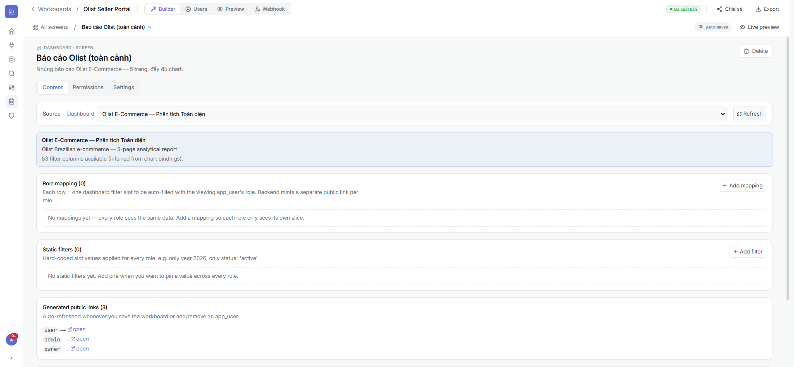
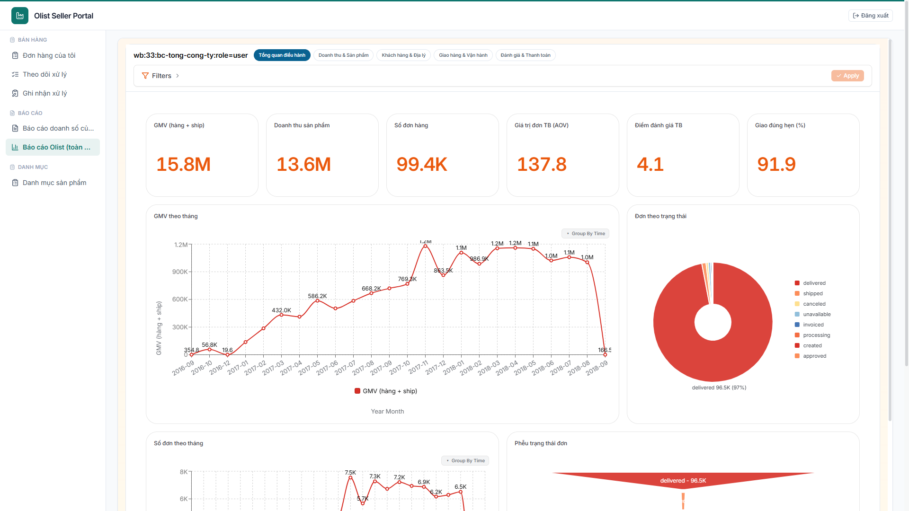
5.7Phân quyền hàng (RLS) theo người dùng
Là gì: mỗi rule = một vai trò + phạm vi xem/thêm/sửa/xoá. Theo quy ước cột miniapp_user, mỗi người chỉ thấy dữ liệu của mình; Owner/Admin có thể xem tất cả.
⚙ Cách làm
- Mở một màn, vào tab Permissions.
- Thêm rule cho vai trò User: đặt filter column =
miniapp_user, filter value ={{app_user.username}}. - Tích các quyền Create / Update / Delete phù hợp; vai trò Owner/Admin có thể bật Unrestricted.
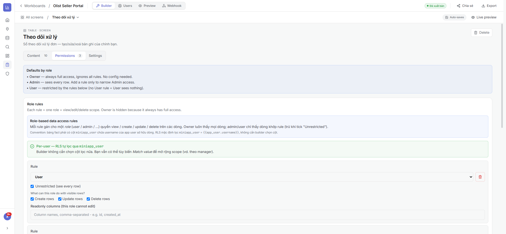
5.8Người dùng & đăng nhập PIN
Là gì: quản lý app-user (username, PIN, vai trò user/admin/owner, ngữ cảnh); có bảng kiểm tra access-mode tự phân loại từng bảng (per-user / shared / joined). Người dùng đăng nhập cổng bằng PIN.
⚙ Cách làm
- Vào tab Users, bấm Add user.
- Nhập username, đặt/PIN sinh tự động, chọn vai trò; lưu.
- Chia sẻ link cổng + PIN cho người dùng để họ đăng nhập.
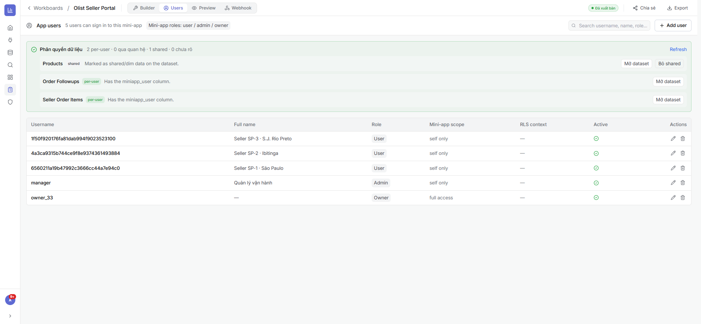
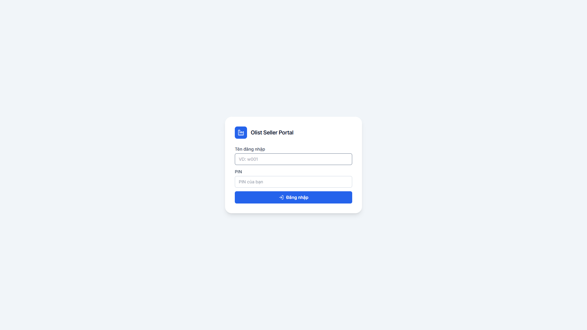
5.10Webhook (đẩy dữ liệu ra hệ thống ngoài)
Là gì: khi người dùng bấm Sync trên màn Document, dữ liệu được POST tới endpoint cấu hình sẵn (batch size, headers, timeout) — kèm lịch sử chạy.
⚙ Cách làm
- Vào tab Webhook → Thêm webhook.
- Nhập tên, URL, màn doc phục vụ, headers, batch size, timeout.
- Bấm Gửi test để thử, rồi Lưu. Xem kết quả ở sub-tab History.
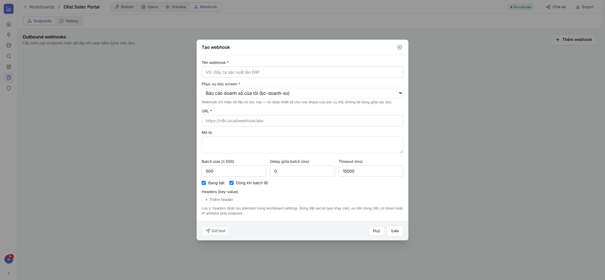
5.11Import / Export Workboard
Là gì: đóng gói toàn bộ app thành bundle (dataset + layout + người dùng) để mang đi nơi khác; khi import chỉ cần chọn đúng Source, hệ thống tự dựng lại dataset và app.
⚙ Cách làm
- Export: trong Builder bấm Export, chọn có kèm PIN hay không, rồi Download .json.
- Import: ở danh sách Workboard bấm Import, tải file bundle, chọn Source/Dataset đích → Tạo dataset + import.
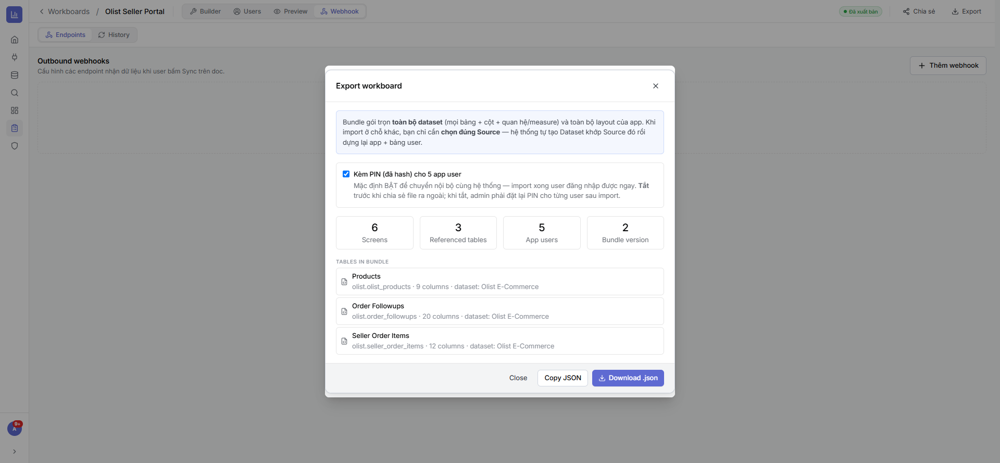
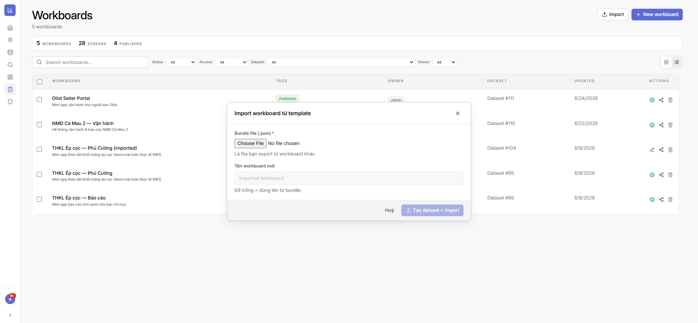
5.12Giao diện Mobile & PWA ĐIỂM MẠNH MỚI
Là gì: mọi mini-app Workboard tự thích ứng với điện thoại và có thể cài lên màn hình chính như một app (PWA) — kèm khả năng dùng offline. Cùng một bản dựng phục vụ cả desktop lẫn mobile, không cần làm app riêng, không phụ thuộc kho ứng dụng.
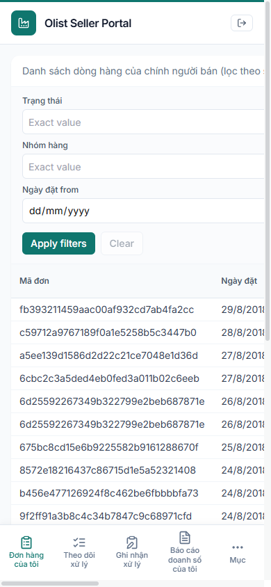
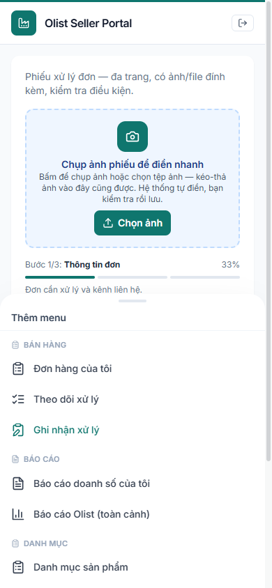
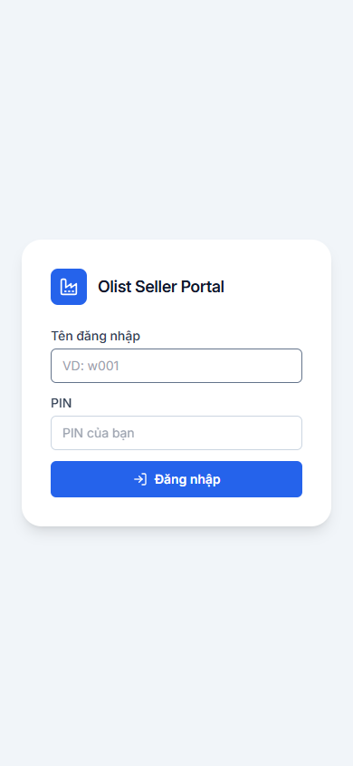
1) Điều hướng tự thích ứng theo kích thước màn. Hệ thống tự nhận diện bề ngang màn hình (không cần chọn thiết bị):
- Điện thoại (< 768px): chọn 1 trong 2 kiểu — Thanh dưới (bottom-nav) hiển thị tối đa 4 mục chính + nút “Mục” mở bảng menu gom theo workspace; hoặc Ngăn kéo (drawer) trượt ra từ nút hamburger.
- Máy tính bảng / desktop (≥ 768px): theo cấu hình của app — Sidebar hoặc Top tabs 2 tầng (workspace → màn hình).
2) Cài như một ứng dụng (PWA) — qua tên miền riêng của bạn. Mini-app có web manifest (chạy toàn màn hình, có icon & màu thương hiệu) nên cài thẳng lên màn hình chính, không cần qua kho ứng dụng.
⚙ Cài lên màn hình chính
- Trên điện thoại, mở https://<tên-miền-của-bạn>/m (iPhone hãy mở bằng Safari) → hiện màn “Ứng dụng của tôi”.
- Bấm “+ Thêm workspace”, dán link Cổng được cấp → ứng dụng xuất hiện trong danh sách trên máy.
- Cài lên màn hình chính:
- iPhone / Safari: bấm nút Chia sẻ (ô vuông có mũi tên ↑ ở thanh dưới) → cuộn xuống chọn “Thêm vào Màn hình chính”.
- Android / Chrome: bấm nút “Cài ứng dụng về màn hình chính” ngay trên trang (hoặc menu ⋮ → Thêm vào màn hình chính).
- Mở app từ icon vừa tạo → chạy toàn màn hình như app gốc (và dùng được cả khi offline — xem mục 3).
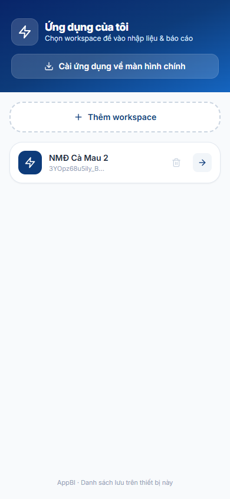
3) Hoạt động offline (offline-first). Phù hợp nhân viên hiện trường, kho, công trường — chỗ sóng yếu:
- Xem được khi mất mạng: các màn (form/table/doc) đã từng mở khi online được lưu cache để mở lại offline.
- Nhập liệu khi mất mạng: phiếu (form thêm mới) được lưu tạm trên máy và tự gửi khi có mạng trở lại; thanh đồng bộ hiện số bản ghi đang chờ + nút gửi thủ công.
- Chống trùng nhờ mã thao tác (gửi lại không tạo bản ghi đôi).
4) Tối ưu cho cảm ứng & camera. Trường ảnh/file trên điện thoại mở thẳng Camera / Thư viện / Tệp; form xếp dọc dễ thao tác; bảng cuộn ngang gọn; bố cục chừa vùng an toàn (tai thỏ/thanh home iPhone). Ô PIN dùng bàn phím số.
5) Thông báo đẩy (Web Push). MỚI Người dùng bật nhận thông báo ngay trong app (nút 🔔 Thông báo ở đầu app). Khi có bản ghi được cập nhật, hệ thống đẩy thông báo về máy — kể cả khi app đang đóng (qua Service Worker) — bấm vào mở thẳng màn liên quan. Hợp để báo tài xế có chuyến mới, báo điều phối khi trạng thái đơn đổi.